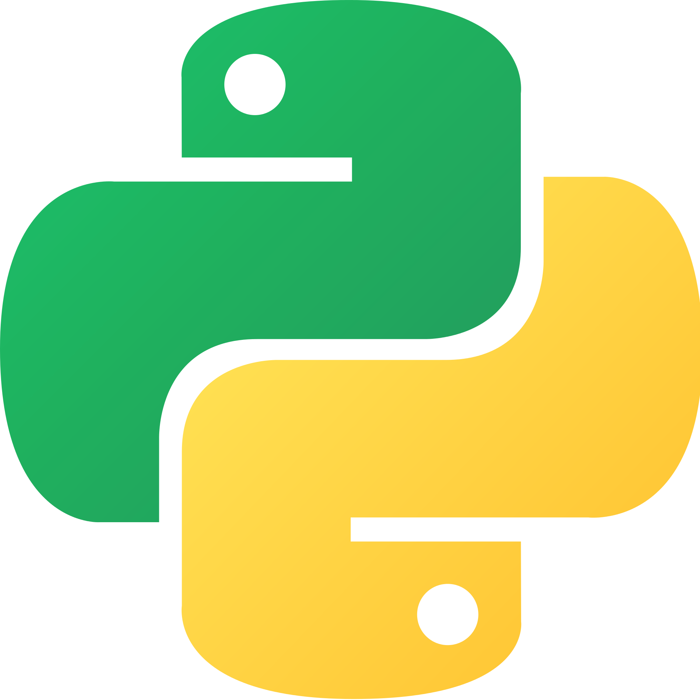

Данные в языке Python представлены в форме объектов. Объекты – это области памяти со значениями и ассоциированными с ними наборами операций. Типы объектов могут быть либо встроенными, либо описанными с помощью классов. Однако создание собственных структур данных чаще всего не требуется, так как Python имеет мощную коллекцию собственных. Кроме того, их использование предпочтительнее, так как скорость работы с ними намного выше. Итак, используемые нами типы данных:
Если вы уже занимались программированием, группа числовых типов данных скорее всего покажется вам знакомой. Мы будем использовать целые числа (числа без дробной части), вещественные числа (грубо говоря, числа с десятичной точкой) и числа с фиксированной точностью. Естественно, числа поддерживают базовые математические операции.
| x + y или x += y | Сложение |
| x - y или x -= y | Вычитание |
| x * y | Умножение |
| x / y | Деление |
| x // y | Получение целой части от деления |
| x % y | Остаток от деления |
| -x | Смена знака числа |
| abs(x) | Модуль числа |
| divmod(x, y) | Пара (x // y, x % y) |
| x ** y или pow(x, y) | Возведение в степень |
>>> 123 + 222 345 >>> 1.5 * 4 6.0
Можете заметить, что в результате проведения второй операции, то есть умножения вещественного числа на целое, компилятор вернул вещественное число. Это произошло, потому что из двух типов данных, над которыми производятся операции, всегда выбирается супертип (тот, который имеет большую выразительную мощность).
Будьте внимательны, если вам нужно получить результат деления двух целых чисел! Для того, чтобы увидеть дробную часть, необходимо, чтобы хотя бы одно из них было вещественным.
>>> 4/3 1 >>> 4/3.0 1.3333333333333333
Хорошая новость: в Python3 такого "наследования типов" больше нет, результатом деления двух целых чисел будет вещественное.
>>> 9/7 1.2857142857142858
Ок, что если мы не хотим видеть эту кучу цифр, а нам нужно число с тремя знаками после запятой? Для этого есть форматированный вывод...
>>> '{0:.3f}'.format(9/7)
'1.286' А если нам наоборот нужно увидеть больше цифр? Для этого и существуют числа с фиксированной точностью.
>>> >>> import decimal
>>> d= decimal.Decimal(9/7)
>>> d
Decimal('1.2857142857142858094476878250134177505970001220703125')
В Python существуют объекты True и False, которые по сути являются обычными целыми числами 1 и 0 с некоторыми особенностями отображения на экране
>>> 1 > 2, 1 < 2 # Логические значения (False, True) >>> 3 + True 4
Кроме того, существует None, которое выражает отсутствие значения. Пример использования:
>>> def test(x=None):
... if x is None:
... print('no x here')
... else:
... print(x)
...
>>> test()
no x here
>>> test('x!')
x!
Объект None также используется при рекурсии: после того, как уровень возвращает значение None (выполнены все требуемые операции), программа возвращается к предыдущему уровню.
Cтроки могут задаваться как апострофами, так и кавычками. Причина наличия двух вариантов в том, чтобы позволить вставлять в литералы строк символы кавычек или апострофов.
>>> S = 'spam"s' >>> S = "spam's"
Строки являются последовательностями, то есть одна строка представляет собой последовательность односимвольных строк, к которым можно обращаться при помощи индексов. Обратите внимание, что в языке Python индексы реализованы в виде смещений от начала и потому индексация начинается с 0: первый элемент имеет индекс 0, второй – 1 и так далее. Также возможна индексация в обратном порядке, где последний элемент имеет индекс -1, предпоследний – -2.
>>> S = ‘Spam’ >>> len(S) # Длина 4 >>> S[0] # Первый элемент в S, счет начинается с позиции 0 ‘S’ >>> S[1] # Второй элемент слева ‘p’ >>> S[-1] # Последний элемент в конце S ‘m’ >>> S[-2] # Второй элемент с конца ‘a’
Помимо извлечения конкретного элемента посредством индексирования уществует возможность получения среза (slicing), которая обеспечивает возможность извлечения за одну операцию целого сегмента (среза)
>>> S # Строка из 4 символов ‘Spam’ >>> S[1:3] # Срез строки S начиная со смещения 1 и до 2 (не 3) ‘pa’’ >>> S[1:] # Все, кроме первого элемента (1:len(S)) ‘pam’ >>> S # Сама строка S без изменений ‘Spam’ >>> S[0:3] # Все, кроме последнего элемента ‘Spa’ >>> S[:3] # То же, что и S[0:3] ‘Spa’ >>> S[:-1] # Еще раз все, кроме последнего элемента, но проще (0:-1) ‘Spa’ >>> S[:] # Все содержимое S, как обычная копия (0:len(S)) ‘Spam’
Будучи последовательностями, строки поддерживают операцию конкатенации, которая записывается в виде знака плюс (объединение двух строк в одну строку), и операцию повторения (новая строка создается за счет много- кратного повторения другой строки)
>>> S ‘Spam’ >>> S + ‘xyz’ # Конкатенация ‘Spamxyz’ >>> S # S остается без изменений ‘Spam’ >>> S * 8 # Повторение ‘SpamSpamSpamSpamSpamSpamSpamSpam’
Строки являются неизменяемыми, поэтому в предыдущих примерах ни одна из использованных операций не изменила оригинальную строку. Вы не сможете изменить строку присвоением значения одной из ее позиций, но вы всегда можете создать новую строку и присвоить ей то же самое имя.
>>> S ‘Spam’ >>> S[0] = ‘z’ # Неизменяемые объекты нельзя изменить ...текст сообщения об ошибке опущен... TypeError: ‘str’ object does not support item assignment >>> S = ‘z’ + S[1:] # Но с помощью выражений мы можем создавать новые объекты >>> S ‘zpam’
Базовые операции над строками:
>>> S.find(‘pa’) # Поиск смещения подстроки 1 >>> S.replace(‘pa’, ‘XYZ’) # Замена одной подстроки другой ‘SXYZm’ >>> S.upper() # Преобразование символов в верхний и в нижний регистр ‘SPAM’ >>> S.isalpha() # Проверка содержимого: isalpha, isdigit и так далее True >>> line = ‘aaa,bbb,ccccc,dd’ >>> line.split(‘,’) # Разбивает строку по разделителю и создает список строк [‘aaa’, ‘bbb’, ‘ccccc’, ‘dd’] >>> line = ‘aaa,bbb,ccccc,dd\n’ >>> line = line.rstrip() # Удаляет завершающие пробельные символы >>> line ‘aaa,bbb,ccccc,dd’
Списки – это упорядоченные по местоположению коллекции объектов произвольных типов, размер которых не ограничен. Кроме того, в от- личие от строк, списки являются изменяемыми – они могут модифицироваться как с помощью операций присваивания по смещениям, так и с помощью разнообразных методов работы со списками.
Поскольку списки являются последовательностями, они поддерживают все операции над последовательностями, которые были приведены в разделе строк.
>>> L = [123, ‘spam’, 1.23] # Список из трех объектов разных типов >>> len(L) # Число элементов в списке 3 >>> L[0] # Доступ к элементу списка по его индексу 123 >>> L[:-1] # Операция получения среза возвращает новый список [123, ‘spam’] >>> L + [4, 5, 6] # Операция конкатенации также возвращает новый список [123, ‘spam’, 1.23, 4, 5, 6] >>> L # Наши действия не привели к изменению оригинального списка [123, ‘spam’, 1.23]
Списки в языке Python являются аналогом массивов в других языках программирования, но они обладают более широкими возможностями. Рассмотрим основные операции, характерные для списков.
>>> L.append(‘NI’) # Увеличение: в конец списка добавляется новый объект
>>> L
[123, ‘spam’, 1.23, ‘NI’]
>>> L.pop(2) # Уменьшение: удаляется элемент из середины списка
1.23
>>> L # Инструкция “del L[2]” также удалит элемент списка
[123, ‘spam’, ‘NI’]
>>> L.index('NI') #определяет индекс первого элемента с указанным значением
2
>>> L.count('NI') #считает количество элементов
1
>>> M = [‘bb’, ‘aa’, ‘cc’]
>>> M.sort()
>>> M
[‘aa’, ‘bb’, ‘cc’]
>>> M.reverse()
>>> M
[‘cc’, ‘bb’, ‘aa’]
Рассмотрим различие методов append() и extend():
>>> L = [1, 2] >>> D = [3, 4] >>> L.append(D) >>> L [1, 2, [3, 4]] >>> L = [1, 2] >>> D = [3, 4] >>> L.extend(D) >>> L [1, 2, 3, 4]
Одна из замечательных особенностей базовых типов языка Python состоит в том, что они поддерживают возможность создания вложенных конструкций. Одно из очевидных применений этой особенности – представление матриц, или «многомерных массивов» в языке Python. Делается это с помощью списка, содержащего вложенные списки:
>>> M = [[1, 2, 3], # Матрица 3 x 3 в виде вложенных списков [4, 5, 6], # Выражение в квадратных скобках может [7, 8, 9]] # занимать несколько строк >>> M [[1, 2, 3], [4, 5, 6], [7, 8, 9]] >>> M[1] # Получить строку 2 [4, 5, 6] >>> M[1][2] # Получить строку 2, а затем элемент 3 в этой строке 6
Кортеж — это список, который невозможно изменить. Кортежи поддерживают большинство операций, доступных для списков.
>>> T = (1, 2, 3, 4) # Кортеж из 4 элементов >>> len(T) # Длина 4 >> T + (5, 6) # Конкатенация (1, 2, 3, 4, 5, 6) >>> T[0] # Извлечение элемента, среза и так далее 1
Словари являются неупорядоченными коллекциями объектов, доступ к элементам которых предоставляется с помощью ключа (такие коллекции называются отображениями). Словарь состоит из пар ключ:значение. Словари удобно использовать всегда, когда возникает необходимость связать значения с ключами, например чтобы описать свойства чего-либо. Рассмотрим базовые операции:
>>> D = {‘food’: ‘Spam’, ‘quantity’: 4, ‘color’: ‘pink’}
>>> D[‘food’] # Получить значение, связанное с ключом ‘food’
‘Spam’
>>> D[‘quantity’] += 1 # Прибавить 1 к значению ключа ‘quantity’
>>> D
{‘food’: ‘Spam’, ‘color’: ‘pink’, ‘quantity’: 5}
>>> D['music'] = 'rock' #добавляем пару в словарь
>>> {‘color’: ‘pink’, ‘food’: ‘Spam’, 'music': 'rock', ‘quantity’: 5}
>>> D.keys() #получаем список ключей
dict_keys(['color', 'quantity', 'music', 'food'])
>>> D.values() #получаем список значений
dict_values(['pink', 5, 'rock', 'Spam'])
Словари, так же как и списки, могут иметь несколько уровней вложенности.
>>> rec = {‘name’: {‘first’: ‘Bob’, ‘last’: ‘Smith’},
‘job’: [‘dev’, ‘mgr’],
‘age’: 40.5}
>>> rec[‘name’] # ‘Name’ – это вложенный словарь
{‘last’: ‘Smith’, ‘first’: ‘Bob’}
>>> rec[‘name’][‘last’] # Обращение к элементу вложенного словаря
‘Smith’
>>> rec[‘job’] # ‘Job’ – это вложенный список
[‘dev’, ‘mgr’]
>>> rec[‘job’][-1] # Обращение к элементу вложенного списка
‘mgr’
>>> rec[‘job’].append(‘janitor’) # Расширение списка должностей Боба (Bob)
>>> rec
{‘age’: 40.5, ‘job’: [‘dev’, ‘mgr’, ‘janitor’], ‘name’: {‘last’: ‘Smith’,
‘first’: ‘Bob’}}
Множества – это неупорядоченные коллекции уникальных и неизменяемых объектов, которые поддерживают типичные математические операции над множествами.
>>> X = set(‘spam’) # В 2.6 и 3.0 можно создавать из последовательностей
>>> Y = {‘h’, ‘a’, ‘m’} # В 3.0 можно определять литералы множеств
>>> X, Y
({‘a’, ‘p’, ‘s’, ‘m’}, {‘a’, ‘h’, ‘m’})
>>> X & Y # Пересечение
{‘a’, ‘m’}
>>> X | Y # Объединение
{‘a’, ‘p’, ‘s’, ‘h’, ‘m’}
>>> X – Y # Разность
{‘p’, ‘s’}
Объекты-файлы – это основной интерфейс между программным кодом на языке Python и внешними файлами на компьютере.
>>> f = open(‘data.txt’, ‘w’) # Создается новый файл для вывода >>> f.write(‘Hello\n’) # Запись строки байтов в файл 6 >>> f.write(‘world\n’) # В Python 3.0 возвращает количество записанных байтов 6 >>> f.close() # Закрывает файл и выталкивает выходные буферы на диск >>> f = open(‘data.txt’) # ‘r’ – это режим доступа к файлу по умолчанию >>> text = f.read() # Файл читается целиком в строку >>> text ‘Hello\nworld\n’ >>> text1 = f.readlines() # text1 - список, состоящий из строк файла. >>> text1 ['Hello\n', 'world\n'] >>> text2 = f.readline() # считывает 1 строчку из файла >>> text2 'Hello\n' >>> text2 = f.readline() #при каждом вызове читает первую из оставшихся строчек >>> text2 'world\n' >>> print(text) # Вывод, с попутной интерпретацией служебных символов Hello world >>> text.split() # Содержимое файла всегда является строкой [‘Hello’, ‘world’]